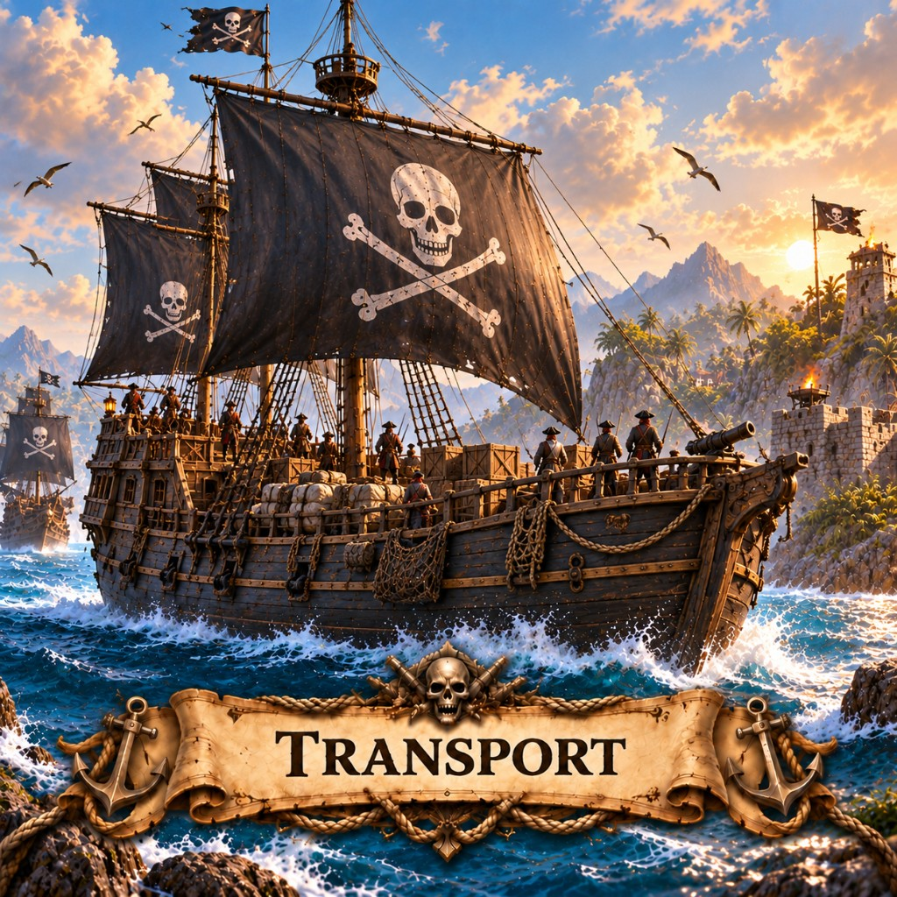

Transports in Marauder's Sea carry troops across water. Max 3 boats, light deck guns, thin hulls. How landings work.

Not every black sail is hunting. Some are a beach in motion — crates, barrels, and a company packed rail to rail. The Transport is how an island learns it has new neighbors.
Open the radial menu on water (or use the boat order) to send a Transport at a coast. She must reach a landing tile. Naval Mines, Port Guns, Warships, and Marauders all love a loaded boat. Escort her, or send two and expect to lose one.
Back to the building list or pick a map like X Marks the Spot and play this mobile strategy game in the browser.